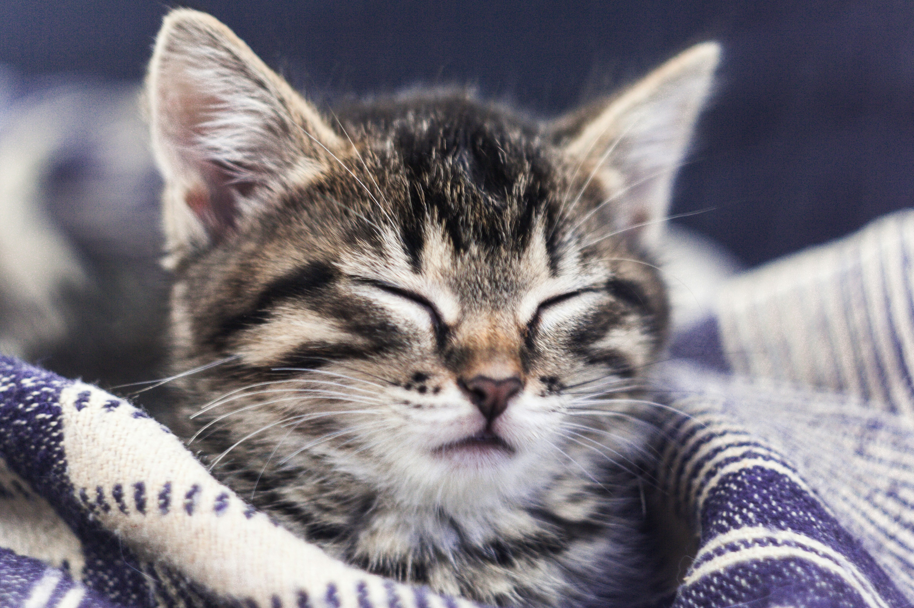

Gatitos.Com

Aprende sobre la mejor manera de cuidar a tu gato, incluyendo consejos sobre higiene, salud y ejercicio. Descubre cómo crear un ambiente seguro y acogedor para tu compañero felino.
Conoce las necesidades nutricionales de los gatos y encuentra recomendaciones sobre la mejor comida y hábitos de alimentación para mantener a tu gato feliz y saludable.

Sumérgete en el fascinante mundo de los gatos con datos curiosos, mitos y leyendas que rodean a estas criaturas. Te sorprenderás con lo que aprenderás sobre su comportamiento y sus habilidades.

Explora las diferentes razas de gatos y sus características únicas. Desde los juguetones Siameses hasta los majestuosos Persas, descubre cuál podría ser el compañero felino perfecto para ti.